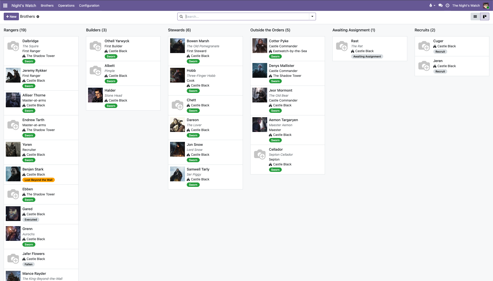
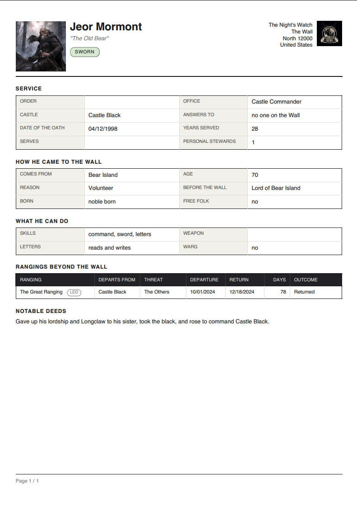
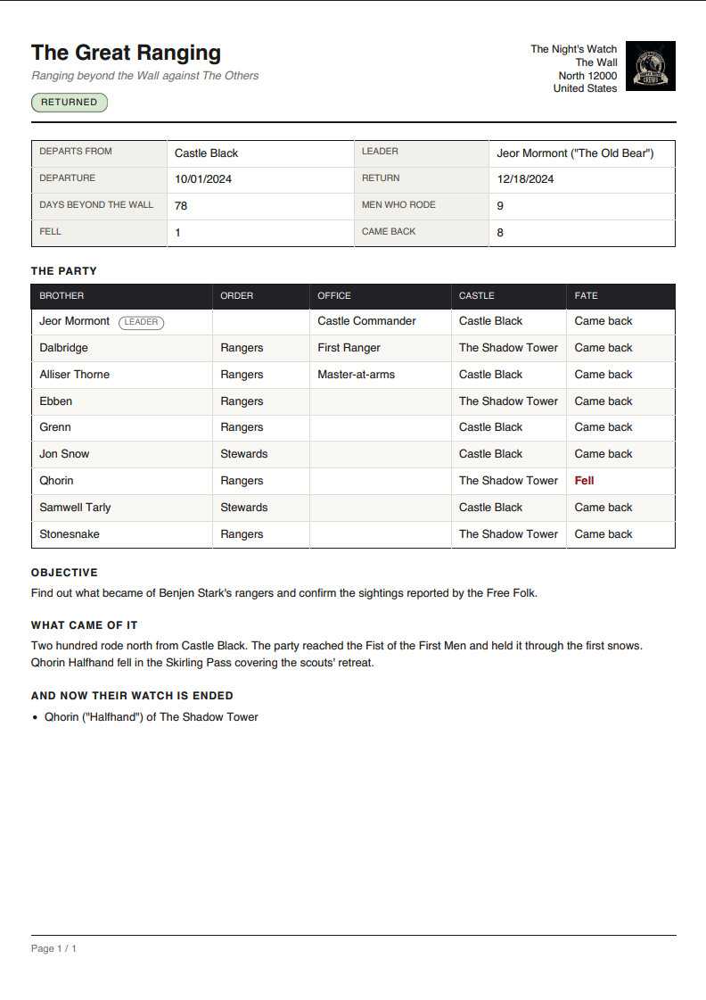

Registry of the sworn brotherhood of the Wall: three orders, manned castles, an extended brother card, ranging parties sent beyond the Wall, and the threats they are sent against.
A brother is described by three independent things, and everything else is derived from them — the chain of command, the commander of a castle, the master-at-arms who trains its recruits. None of it is typed in by hand.
|
Order
What he does day to day: ranging, building, or keeping the stores.
|
Office
A personal appointment on top of it: commander, maester, septon, master-at-arms, First of an order.
|
Standing
Where he is on the road: recruit, awaiting an assignment, sworn, ranging, or gone from the rolls.
|
Brothers are laid out by standing: a column for each order, one for the offices that stand above all three, one for the men awaiting a posting, and one for the recruits. Each card carries the portrait, the office, the castle and the status of the man.

Two QWeb-PDF reports, both under ⚙ Actions → Print, and both able to print a whole selection at once.
|

Brother Dossier — the card of one man: service, how he came to the
Wall, what he can do, notable deeds, and the table of every ranging he rode.
|

Ranging Report — the party and the fate of every man in it, the
objective, what came of it, and the roll of the fallen.
|
| Group | May do |
|---|---|
| Brother | Reads the rolls of the whole Wall and changes nothing. |
| Officer | Enrols and posts the men of his own castle. Deletes nothing. |
| Castle Commander | May strike out the records of the castle he commands. Other castles are not his to touch. |
Groups are never assigned by hand: they follow the office a brother holds and are kept in step automatically.